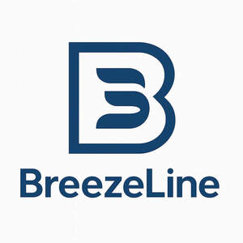
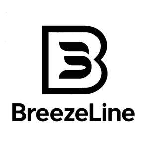

Trade Mark Journal No.2025/048 28 November 2025
UK00004297941 20 November 2025 (11,16)
Mark 1

Mark 2

- Class 11
- Electric fans; Electric cooling fans; Electric bladeless fans; Electric heating fans; Portable electric fans; Electric fans for ventilation; Electric window fans; Wearable electric fans; Fan heaters; Electric fans for household use; Fans (Electric -) for personal use; Electric fans for personal use; Electric fans with evaporative cooling devices; Electric heaters; Electric dehumidifiers; Coolers, electric; Radiators, electric; Electric radiators; Radiant fan heaters; Electric dehydrators; Electric fans [for household purposes]; Portable electric heaters; Electric humidifiers; Electric lights; Electric air conditioners; Electric kettles; Electric lighting; Electric heating cables; Electric bottle heaters; Electric blankets; Electric lamps; Lamps (Electric -); Electric hotplates; Electric beverage heaters; Battery-operated electric candles; Portable electric fires; Electric bulbs; Electric coffeepots; Electric candles; Electric water heaters; Electric heating installations.
- Class 16
- Paper; Kraft paper; Paper stock [printing paper]; Newsprint paper; Photocopy paper; Stencil paper [mimeograph paper]; Paper stationery; Letterhead paper; Paper sheets [stationery]; Serviettes of paper; Paper serviettes; Paper and cardboard; Greaseproof paper; Notebook paper; Envelope paper; Paper doilies; Tissue paper for making stencil paper; Carbonless paper; Napkin paper; Glassine paper; Paper napkins; Napkins of paper; Corrugated paper; Letter paper; Printing paper; Xerographic paper; Laminated paper; Paper for photocopies; Manila paper; Postcard paper; Paper for photocopying; Paper staplers; Staplers for paper; Parchment paper; Paper towels; Towels of paper; Cloth paper; Tissue paper for use as material of stencil paper (ganpishi); Calendered paper; Typewriter paper; Tissue paper; Stencil paper; Toilet paper; Printed paper invitations; Paper folders; Gummed paper; Magazine paper; Paper made from paper mulberry (kohzo-gami); Publication paper; Paper bunting; Semi-processed paper; Paper fasteners; Paper board; Tablecloths of paper; Paper tablecloths; Oiled paper for paper umbrellas (kasa-gami); Calligraphy paper; Paper washcloths; Paper hand-towels; Paper ribbon; Copying paper [stationery]; Paper handkerchiefs; Tablemats of paper; Paper boxes; Boxes of paper; Paper lace; Packing paper; Writing paper; Reproduction paper; Copying paper; Blank paper notebooks; Paper wipes; Recycled paper; Paper tags; Art paper; Paper hangtags; Paper bags; Bags of paper; Self-adhesive paper for notes; Paper envelopes for packaging; Book-cover paper; Paper (Waxed -); Paper stock; Computer paper; Carbon paper; Laser print paper; Waterproof paper; Crepe paper; Rice paper; Digital printing paper; Adhesive paper; Synthetic paper; Carbonless copying paper.
BREEZE LINE LTD